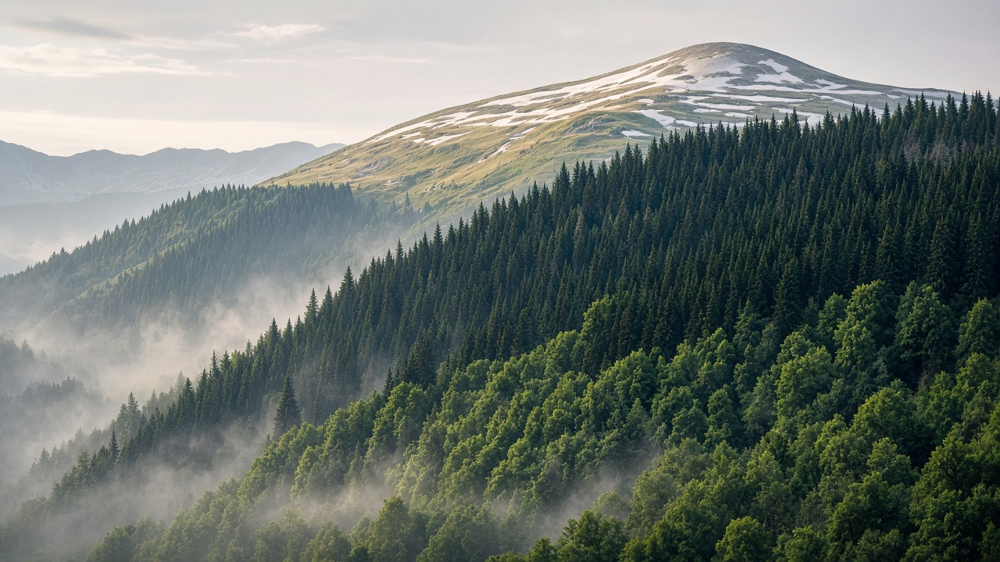
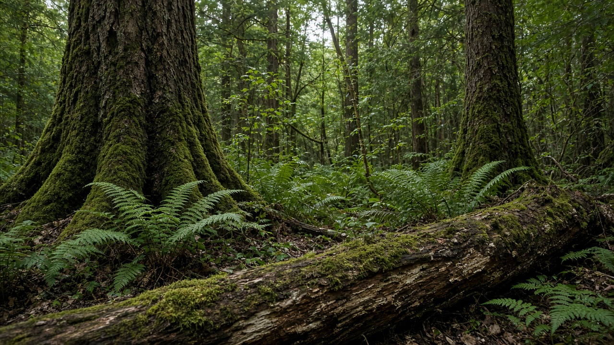
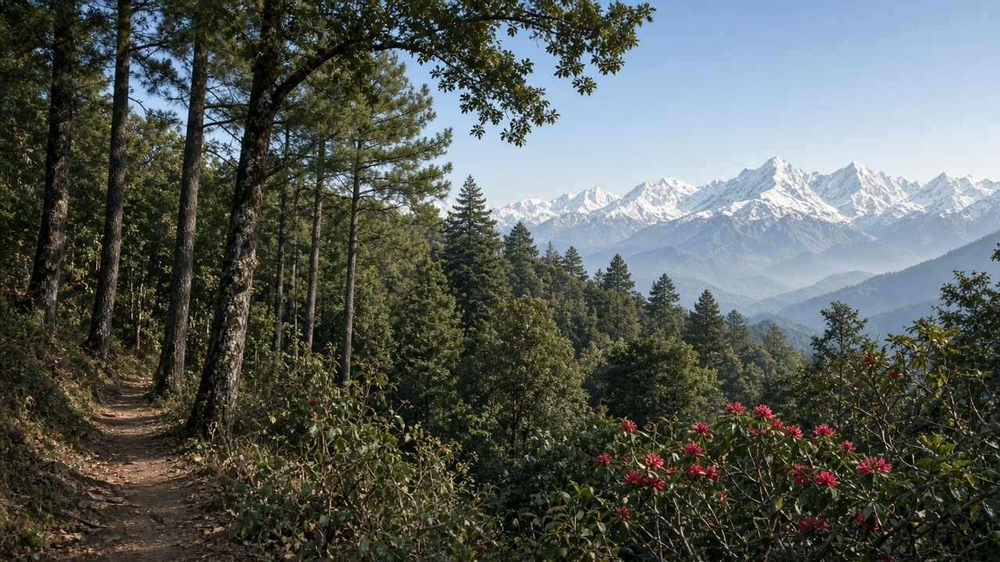

Forest Types and Biomes
Published on August 20, 2026

Forests form one of Earth's major terrestrial biomes, covering roughly one-third of land and storing vast carbon, water, and biological diversity. Climate, elevation, soil, and disturbance history sort woodlands into tropical, temperate, boreal, dry, and montane types, each with characteristic canopy structure, leaf habit, and species pools. Rainfall and temperature set the outer envelope: wet equatorial zones support multi-layered rainforests, while long winters favor needle-leaved taiga and seasonal rainfall produces deciduous or sclerophyll woodlands. Understanding these patterns helps managers match restoration, harvest, and conservation tools to local ecology rather than applying a single forest model worldwide.
Within each biome, stands vary from old-growth mosaics to young secondary growth, plantations, and agroforests. Leaf area, understory density, and dead-wood volume shape habitat for birds, mammals, insects, and fungi. Fire, windthrow, insects, and human use continually reset patches, so a healthy landscape usually contains several age classes rather than a uniform canopy. Mapping forest types with satellite data, field plots, and local knowledge reveals where rare associations persist and where conversion to agriculture or settlement has already simplified the mosaic.
Policy and education benefit when people can name the forest they live beside. National inventories that classify biomes, ecological zones, and forest condition support carbon accounting, biodiversity targets, and community forestry plans. Students and landholders who recognize whether a slope holds oak-rhododendron, sal, pine, or mixed broadleaf can choose species and grazing rules that fit that system. Treating forest types as living geography—not generic green cover—keeps interventions grounded in climate, culture, and the long memory of soils and seed banks.

वन पृथ्वीका प्रमुख स्थलीय बायोममध्ये एक हो, जसले जमिनको करिब एक तिहाइ ढाक्छ र ठूलो कार्बन, पानी र जैविक विविधता भण्डारण गर्छ। जलवायु, उचाइ, माटो र अवरोध इतिहासले वनलाई उष्ण, समशीतोष्ण, बोरेयल, सुख्खा र पहाडी प्रकारमा बाँड्छ, प्रत्येकको छानो संरचना, पात स्वभाव र प्रजाति समूह फरक हुन्छ। वर्षा र तापक्रमले बाहिरी सीमा निर्धारण गर्छ: भिजेको भूमध्यरेखीय क्षेत्रमा बहु-तह वर्षावन हुन्छ, लामो जाडोले सुई-पात ताइगा र मौसमी वर्षाले पतझड वा कडा-पात वन पैदा गर्छ। यी ढाँचा बुझ्दा व्यवस्थापकले पुनर्स्थापना, कटान र संरक्षण औजार स्थानीय पारिस्थितिकीसँग मिलाउन सक्छन्।
प्रत्येक बायोमभित्र स्ट्यान्ड पुरानो वृद्धि मोज़ेक, युवा द्वितीयक वृद्धि, वृक्षारोपण र कृषि वनसम्म फरक हुन्छ। पात क्षेत्र, तल्लो वन घनत्व र मृत काठको आयतनले चरा, स्तनधारी, कीरा र ढुसीको वासस्थान आकार दिन्छ। आगो, हावा ढाल्ने, कीरा र मानव प्रयोगले प्याच फेरि सेट गर्छ, त्यसैले स्वस्थ परिदृश्यमा एकरूप छानोभन्दा धेरै उमेर वर्ग हुन्छ। उपग्रह डाटा, क्षेत्र प्लट र स्थानीय ज्ञानले वन प्रकार नक्सा गर्दा दुर्लभ संघ कहाँ बाँच्छ र कृषि वा बस्तीले मोज़ेक कहाँ सरल बनाइसक्यो देखाउँछ।
नीति र शिक्षाले मानिसले आफू छेउको वन नाम दिन सक्दा फाइदा लिन्छ। बायोम, पारिस्थितिक क्षेत्र र वन अवस्था वर्गीकरण गर्ने राष्ट्रिय सूचीले कार्बन लेखा, जैविक विविधता लक्ष्य र सामुदायिक वन योजना समर्थन गर्छ। विद्यार्थी र भूमिपतिले भिरमा ओक-गुराँस, साल, सल्ला वा मिश्रित चौडापात हो भनी चिन्दा त्यस प्रणाली सुहाउने प्रजाति र चराउ नियम छान्न सक्छन्। वन प्रकारलाई सामान्य हरियो आवरण होइन जीवित भूगोल मानेर हस्तक्षेप जलवायु, संस्कृति र माटो तथा बीउ बैंकको लामो स्मृतिमा आधारित रहन्छ।

वन पृथ्वी के प्रमुख स्थलीय बायोम में से एक है, जो भूमि का लगभग एक तिहाई ढकता है और विशाल कार्बन, जल और जैव विविधता संचित करता है। जलवायु, ऊँचाई, मिट्टी और विक्षोभ इतिहास वनों को उष्णकटिबंधीय, समशीतोष्ण, बोरेयल, शुष्क और पर्वतीय प्रकारों में बाँटते हैं, प्रत्येक की छत्र संरचना, पत्ती स्वभाव और प्रजाति समूह अलग होता है। वर्षा और तापमान बाहरी सीमा तय करते हैं: गीले भूमध्यरेखीय क्षेत्रों में बहु-स्तरीय वर्षावन होते हैं, लंबी सर्दी सुई-पत्ती ताइगा और मौसमी वर्षा पर्णपाती या कठोर-पत्ती वन पैदा करती है। ये पैटर्न समझने पर प्रबंधक पुनर्स्थापना, कटाई और संरक्षण उपकरण स्थानीय पारिस्थितिकी से मिला सकते हैं।
प्रत्येक बायोम के भीतर स्टैंड पुरानी वृद्धि मोज़ेक, युवा द्वितीयक वृद्धि, वृक्षारोपण और कृषि वन तक भिन्न होते हैं। पत्ती क्षेत्र, अधोवन घनत्व और मृत काठ का आयतन पक्षी, स्तनधारी, कीट और कवक के आवास को आकार देता है। आग, पवनपात, कीट और मानव उपयोग पैच को फिर सेट करते हैं, इसलिए स्वस्थ परिदृश्य में एकरूप छत्र के बजाय कई आयु वर्ग होते हैं। उपग्रह डेटा, क्षेत्र प्लॉट और स्थानीय ज्ञान से वन प्रकार नक्शा करने पर दुर्लभ संघ कहाँ बचते हैं और कृषि या बस्ती ने मोज़ेक कहाँ सरल कर दिया है दिखाई देता है।
नीति और शिक्षा तब लाभ पाती हैं जब लोग अपने पास के वन का नाम बता सकें। बायोम, पारिस्थितिक क्षेत्र और वन स्थिति वर्गीकृत करने वाली राष्ट्रीय सूची कार्बन लेखांकन, जैव विविधता लक्ष्य और सामुदायिक वन योजना का समर्थन करती है। छात्र और भूमिधारक यदि ढलान पर ओक-बुराँस, साल, चीड़ या मिश्रित चौड़ी पत्ती पहचानें तो उस प्रणाली के अनुकूल प्रजाति और चराई नियम चुन सकते हैं। वन प्रकारों को सामान्य हरित आवरण नहीं जीवित भूगोल मानकर हस्तक्षेप जलवायु, संस्कृति और मिट्टी व बीज बैंक की लंबी स्मृति पर आधारित रहता है।